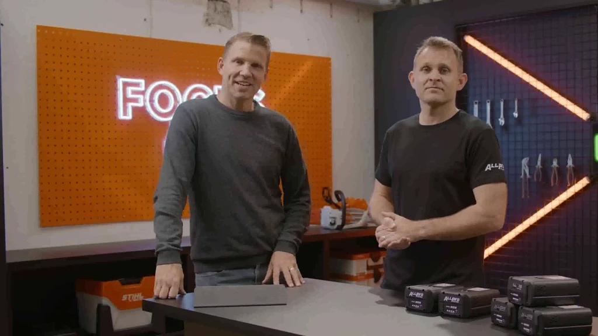
▶ 2:40Moderation
Moderation · Das Showreel
Live-Events, Broadcasts, Interviews, Sport und Markenfilme. Auf Englisch und Deutsch.
Clip ansehen Link kopierenClips
Live-Moderation, Marken- und Produktfilme, Sendungen und mehr. Entdecke ausgewählte Momente meiner Arbeit als Moderator, Host, MC und Presenter – dazu Keynotes und Gespräche über Fußball.

▶ 2:40Moderation
Live-Events, Broadcasts, Interviews, Sport und Markenfilme. Auf Englisch und Deutsch.
Clip ansehen Link kopieren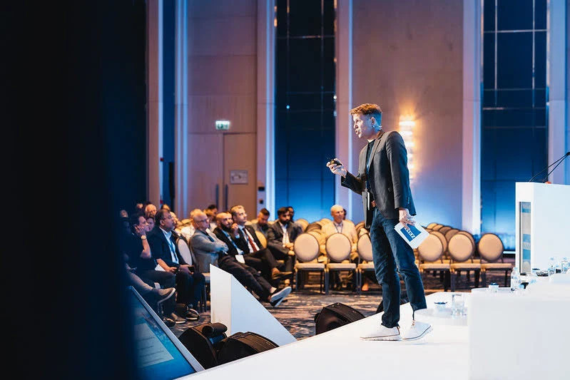
Keynotes
Stärkenorientierung, persönliche Entwicklung, Positive Psychologie und Führung. Elf Ideen aus meinen Vorträgen und Gesprächen, mit englischen Untertiteln und Momenten von internationalen Bühnen.
Clip ansehen ▶ Link kopieren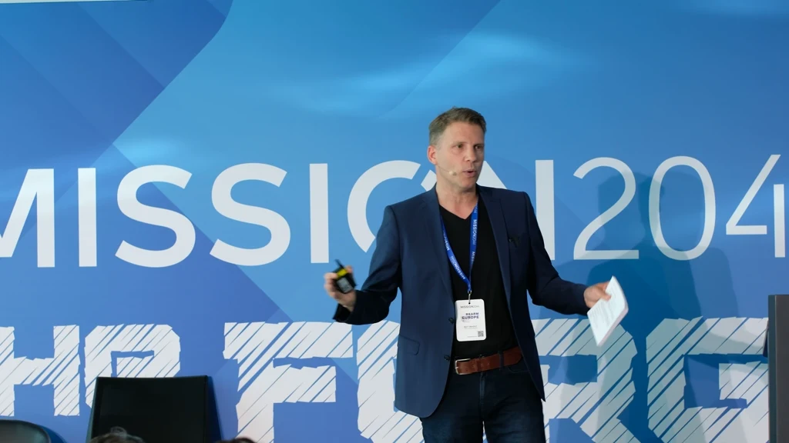
Live-Events
Internationale Bühnen, Publikumsinteraktion, Preisverleihungen und Konferenzmoderation. Highlights von FAW Trucks, Continental, ZEISS, Mission 2044, Stockmeier und Dentsply Sirona.
Clip ansehen Link kopieren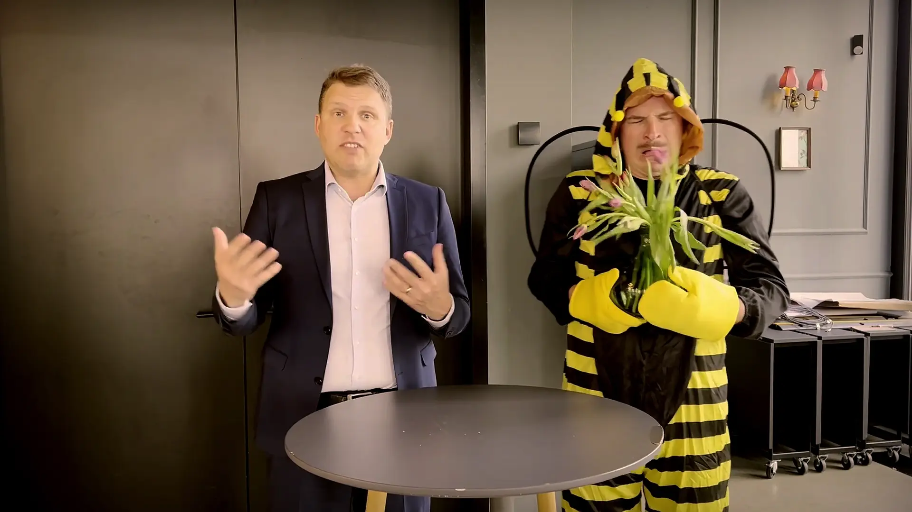
Original-Reel ansehenPositive Psychologie & Stärken
Ein spielerischer Blick auf Positive Psychologie, Stärken und darauf, wie du dich selbst und andere wahrnimmst. Bienen und Fliegen machen die Haltung hinter meiner Arbeit als Speaker erlebbar.
Original-Reel ansehen ▶ Link kopieren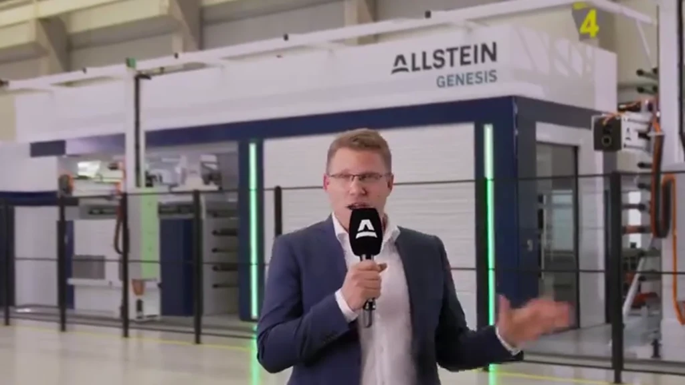
Marken-/Produktfilme
Marken-, Produkt- und Imagefilme. Ich mache aus detaillierten Informationen klare, natürliche Kommunikation vor der Kamera. Zu meinen bisherigen Produktionen zählen BMW und STIHL.
Clip ansehen Link kopieren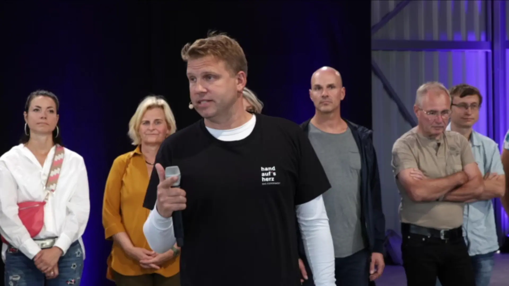
Workshops & Facilitation
Praktische Aufgaben, gemeinsame Ideen und Stärken in Aktion. Ein dynamischer Einblick in meine Workshops und Teamübungen – mit ein paar Gedanken dazu, wie Menschen mehr von dem tun können, was sie besonders gut können.
Clip ansehen ▶ Link kopierenPodcasts & Radio
Zehn Perspektiven auf Moderation, Fußball, Neugier, Stärken und KI. Podcast-Interviews, Gastauftritte und ein Radiospiel-Konzept – durchgehend mit englischen Untertiteln.
Clip ansehen Link kopieren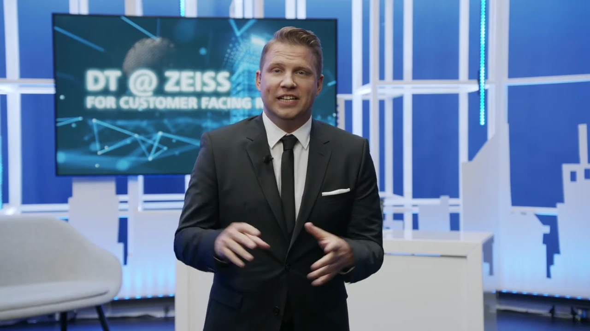
Live-Sendungen
Live-Sport, internationale Streams und hybride Sendungen, darunter TIMBERSPORTS und Unternehmensproduktionen. Präsentation, Interviews und Übergänge mit der Konzentration und Flexibilität, die eine Live-Übertragung verlangt.
Clip ansehen Link kopierenAutomotive
Automotive-Filme, Testfahrten und Fahrzeugvorstellungen. Verständliche Erklärungen, natürliche Präsentation und Begeisterung für die Details, die jedes Fahrzeug besonders machen.
Clip ansehen Link kopieren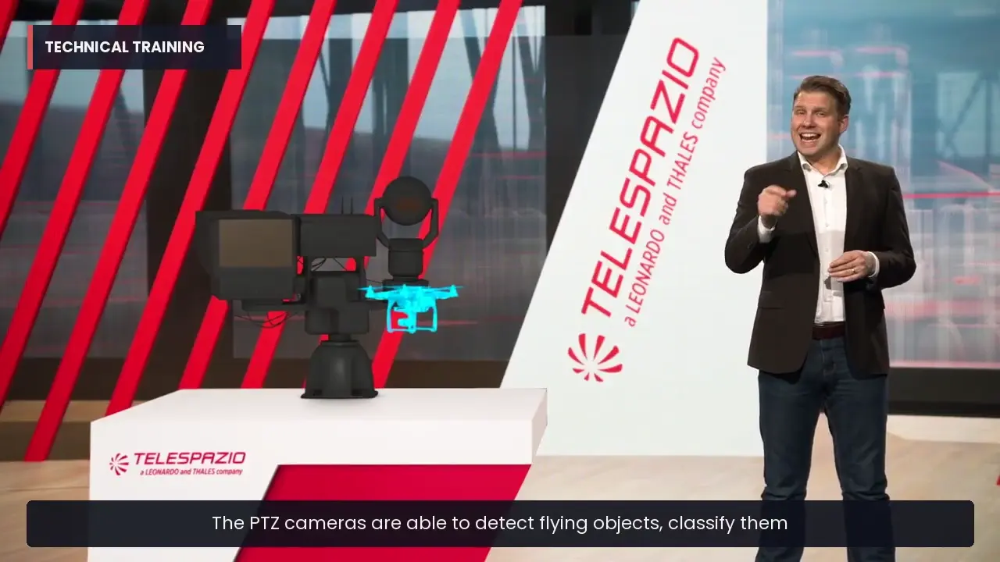
Trainingsvideos
Trainingsfilme, Lernmodule und praktische Erklärformate, die das Wesentliche verständlich machen. Eine zugewandte Begleitung vor der Kamera durch komplexe Informationen, Abläufe und neue Fähigkeiten.
Clip ansehen Link kopieren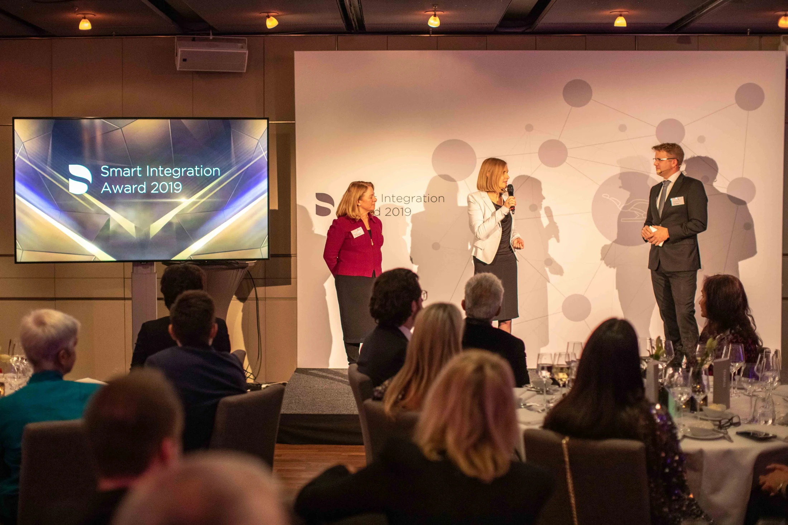
Panels & Interviews
Neun kurze Frage-Antwort-Sequenzen auf Deutsch und Englisch. Gespräche mit Führungskräften, Experteninterviews und Diskussionen auf der Live-Bühne.
Clip ansehen Link kopieren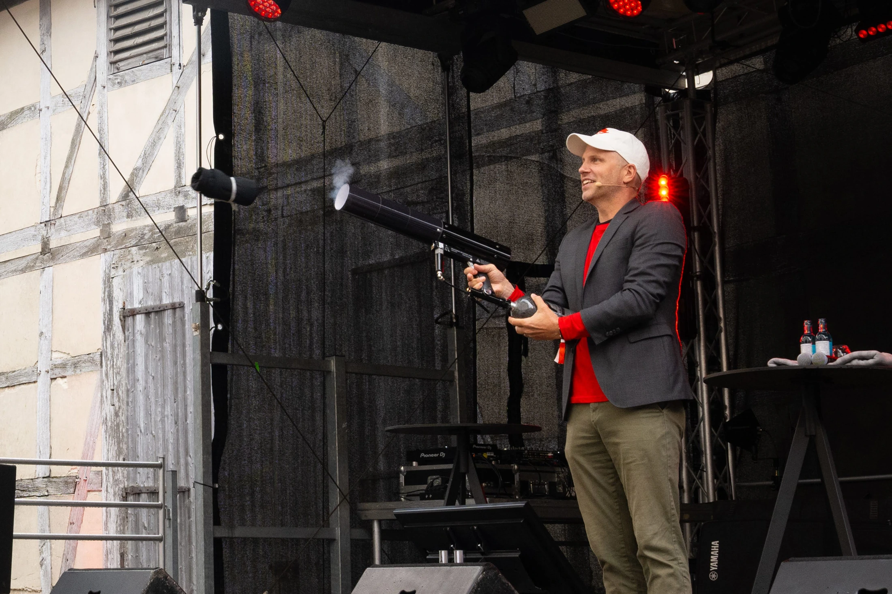
Entertainment / Spaß
Britischer Humor, spielerische Interaktion und überraschende Momente, die Menschen zusammenbringen. Vom lockeren Austausch bis zur ausgelassenen Feier – mit der passenden Energie für Publikum und Anlass.
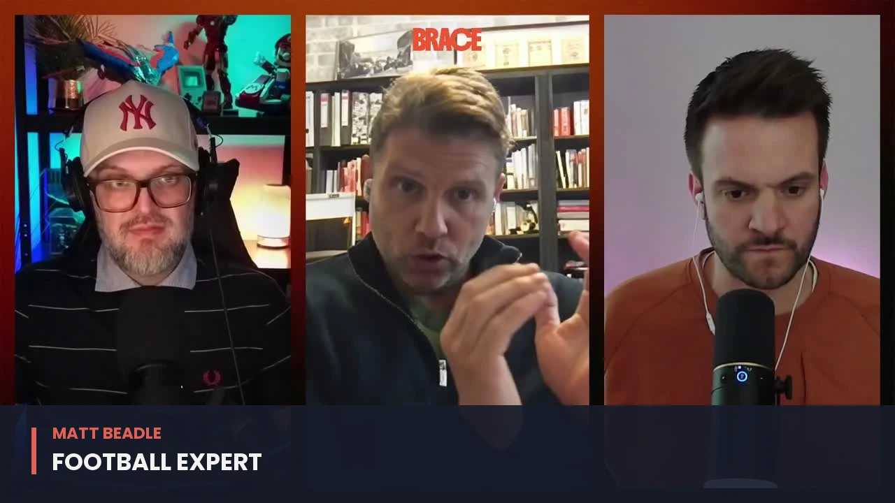
Fußballexperte
Taktische Analyse, datengestütztes Scouting, Teamkultur und Nachwuchsentwicklung. Meine Fußballperspektive in Gesprächen, Vorträgen und bei WDR 2 – mit englischen Untertiteln.
Video ansehen Link kopieren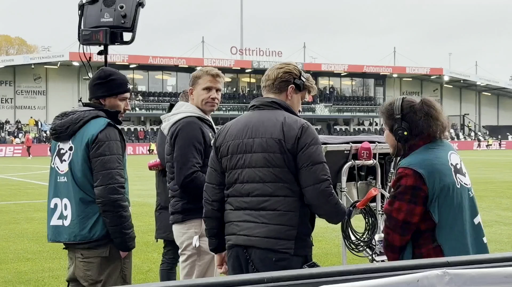
Fußball
Analysen am Spielfeldrand, Fußballgespräche und ein Blick aus dem Verein. Highlights meines Halbzeitauftritts mit Cedric Pick bei MagentaSport zum Spiel SC Verl gegen Wiesbaden.
Clip ansehen Link kopierenErzähl mir von deiner Idee. Wir beginnen mit einem Gespräch.